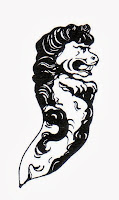
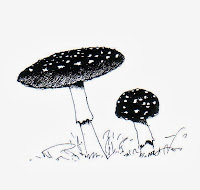
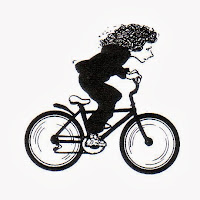
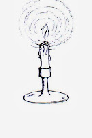

 |
| The Lion of Sole Bay |
{kind=link}
Halloween has snuck up and jumped me
from behind. Several months ago I was visiting my friends at
Kessingland Primary School near Lowestoft when I received an
invitation to call on the librarian (oh, okay, Resource Centre manager) at the nearby secondary school, Pakefield High. It's a newly-built school and I was keen to visit as I knew that most of the Year
Six children I'd met at Kessingland would be moving on to Pakefield. The
school is still in a state of construction but the Resource Centre was
impressive and there was a lovely buzz from the some of the younger
students who were off to a poetry competition in Norwich the
following day.
I was therefore delighted when I was
invited to take part in a 'Literary Leap Day' scheduled for the
autumn term. “We're planning some sort of ghostly / Halloween
theme” said the manager, Linda. “Oh fine,” I responded
blithely. “I'll have my new book out by then and that's sort of
Halloween-y ...” So we were both happy and away I went into the
gorgeous never-never land that intervenes when you've promised to do
something that is way the other side of the summer holidays …
 |
| A. muscaria - POISONOUS! |
{kind=link}
Now, the event is on Friday and I have the programme in front of
me. It appears to be a massive, whole school event. There will be
SPOOKY SLAM! performance poetry. There will be Nightmare News, Film
Fright, Macabre Music, Devilish Drama, Wicked Websites, Demonic
Dance. Somewhere in the science labs there will be students creating
“a real-life Frankenstein, complete with blood and guts”. There
will be Morbid Masks, Creepy Cakes and The Quiz from Hell. But far surpassing all of these in the
scary-ometer stakes, is the activity headed “Grim
Ghost-Writing”. Students are invited – 30 at a time – to “Join
Julia Jones as she guides you through how to write a short, spooky
story […] Then, in a workshop, she will inspire you to write your
own spine-chilling tale! Can you send your readers to ruins?”
AAAAAAAAAAAAAAAAAAGH! Yes! I am in
ruins! I am terrified!!!!
Serves me right of course. I've always
loved my visits to Kessingland where we talk of books, boats and
beaches and recently I've been contentedly running adventure story
workshops in Essex primary schools.
The Lion of Sole Bay is available as promised and, yes, it
opens on the night of Halloween. It was a pragmatic choice, to some extent. I planned to write a story that had
more than one point of view (there are three protagonists, Luke,
Angel and Helen) and I wanted to hold them together in a reasonably
short time-frame. That week which begins with Halloween runs through
All Saints, All Souls, Bonfire Night and if it's just a little longer
it extends to Remembrance Sunday. Usually it's also school half term
which frees the kids to have Adventures. Either get rid of the
parents (put one on a plane, drop a boat on another) or include them
as manic, oppressive presences and you're away, you hope.
 |
| "A small witch fled into the night" |
{kind=link}
I've thoroughly enjoyed writing The
Lion of Sole Bay. If it has any hidden agenda beyond providing
young Luke with an adventure of his own, helping Angel make some friends and sending Helen back to the polder, it's an anti-violence,
anti-superstition, learn-from-the-horrors-of-history novel. It isn't
“a short spooky story” or “grim ghost-writing”. I hope my
readers will feel tense, involved and excited – I don't anticipate
sending them “to ruins”. I am beginning to wonder whether that
the adventure story isn't the complete antithesis of the ghost story
– and I wouldn't mind being talked out of this.
It feels that
characteristic posture for a ghost story protagonist is terrified
helplessness.Those awful nightmares where you can neither move nor
scream. Luke has a bad few hours hiding in the stuffy darkness of his
sleeping bag, convinced that he has seen a werewolf but, come the
dawn when “them dark spirits” have gone back underground, he
laces up his trainers and sets off along the muddy path than leads
past the sluice and round the top of the creek. He – and I – are
back on track.
 |
| All Souls - remembering the dead |
{kind=link}
I'm not a short story writer either. I
read Kathleen Jones's recent blogpost "To Cut a Long Story Short" and all those knowledgeable
comments had me nodding my head glumly. Yes, I believe short stories
may very well be “the narrative equivalent of lyric poetry” (Lee)
“a more difficult form than the novel” (Dennis) “virtuoso
writing” (also Dennis) and conceived “in a different part of the
brain” (Catherine). Unfortunately that's not what I do. I love plot and pace
and spending weeks and months in the company of my characters. I like
to think of them before I go to sleep each night and take them with
me when I walk the dog in the mornings. I don't know Al, who made the
comment that whenever she has a go at a short story it “threatens
to turn into a novel”, but I suspect she may be a kindred spirit.
Okay, so writing a short story would be
a challenge – a new adventure even. I'll make that the 2014
resolution. Meanwhile, with children and young adults in mind, I've
read Sue Price's Overheard in a Graveyard :Nine Haunting Stories (truly chilling) Dennis
Hamley's Out of the Deep: Stories of the Supernatural (wonderfully explanatory) and have
just bought a collection called Twisted Winter: Chilling Tales from the Darkest Nights.
I wait for Friday in a state of terrified helplessness.Those awful nightmares where you can neither move nor scream …
.jpg){kind=link}